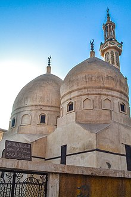

أبو الحَسَن عَلاَءُ الدِّينِ عَلْي بن أبي الحَزم الْخَالِدِيّ المَخزُومَي القََرَشي الدِّمَشْقِيّ الملقب بابن النفيس هو عالم موسوعي وطبيب مسلم، له إسهامات كثيرة في الطب، ويعتبر مكتشف الدورة الدموية الصغري وأحد رواد علم وظائف الأعضاء في الإنسان، حيث وضع نظريات يعتمد عليها العلماء إلى الآن. عين رئيسًا لأطباء مصر. ويعتبره كثيرون أعظم فيزيولوجيّي العصور الوسطى. ظل الغرب يعتمدون على نظريته حول الدورة
ولد بدمشق فيما يُعرف الآن بسوريا عام 607هـ ، ونشأ وتعلم بها في مجالس علمائها ومدارسها. قيل إن لقبه القَرشي نسبة إلى القرش، وتذكر دائرة المعارف الإسلامية أنه ولد على مشارف غوطة دمشق، والراجح أنه من قبيلة قريش من بني مخزوم من الخوالد، وورد لقبه في أول طبعة لكتابه «الموجز»: القرشي . تعلم في البيمارستان النوري بدمشق، كما كان ابن النفيس معاصرًا لمؤرخ الطب الشهير ابن أبي أصيبعة، صاحب (عيون الأنباء في طبقات الأطباء)، ودرس معه الطب على ابن الدخوار وقد درس ابن النفيس أيضًا الفقه الشافعي، كما كتب العديد من الأعمال في الفلسفة، وكان مهتمًّا بالتفسير العقلاني للوحي. ، اعتمد ابن النفيس على العقل في تفسير نصوص القرآن والحديث. كما درس اللغة والمنطق والأدب. وهناك اختلاف حول تاريخ انتقاله إلى القاهرة، إلا أنه يمكن تقدير ذلك في الفترة بين عامي 633 هـ و 636 هـ و عند انتقال ابن النفيس للقاهرة عمل في المستشفى الناصري، وبعد ذلك في مستشفى المنصوري ، حيث أصبح «رئيسًا للأطباء». كما أصبح طبيبًا خاصًا للسلطان الظاهر بيبرس بين عامي 1260 و1277. كان لابن النفيس مجلس في داره يحضره أمراء القاهرة ووجهاؤها وأطباؤها، كما كان ابن النفيس أعذب فأغدق على بناء داره في القاهرة، وفرش أرضها بالرخام حتى إيوانها. أما عن وصفه، فقد كان نحيفًا طويل القامة أسيل الخدين، ولم تقتصر شهرته على الطب فقط، بل كان يعد من كبار علماء عصره في اللغة والفلسفة والفقه والحديث
في عام 1242م، نشر ابن النفيس أكثر أعماله شهرة، وهو كتاب «شرح تشريح قانون ابن سينا»، الذي تضمن العديد من الاكتشافات التشريحية الجديدة، وأهمها نظريته حول الدورة الدموية الصغرى وحول الشريان التاجي، وقد اعتبر هذا الكتاب أحد أفضل الكتب العلمية التي شرحت بالتفصيل مواضيع علم التشريح وعلم الأمراض وعلم وظائف الأعضاء، كما صوّب فيه العديد من نظريات ابن سينا. بعد ذلك بوقت قصير، بدأ العمل على كتابه الشامل في الصناعة الطبية، الذي نشر منه 43 مجلد في عام 1244، وعلى مدى العقود التالية، كتب 300 مجلد لكنه لم يستطع نشر سوى 80 مجلدًا قبل وفاته، وبعد وفاته حلّ كتابه هذا محل «قانون» ابن سينا موسوعة طبية شاملة في العصور الوسطى، مما جعل المؤرخين يصفونه بأنه «ابن سينا الثاني». كان ابن النفيس قبل ذلك قد كتب كتابه «شرح الأدوية المركبة»، تعقيبًا على الجزء الأخير من قانون ابن سينا الخاص بالأدوية، وقد ترجمه «أندريا ألباجو» إلى اللاتينية في عام 1520، ونشرت منه نسخة مطبوعة في البندقية في عام 1547، والتي استفاد منها ويليام هارفي في شرحه للدورة الدموية الكبرى. اتصفت آراء ابن النفيس في الطب بالجرأة، فقد فنّد العديد من نظريات ابن سينا وجالينوس وصوّبها. وقام الباحث الدكتور يوسف زيدان أخيرًا بإعادة تجميع وتحقيق جزء كبير من موسوعة ابن النفيس الشامل في الصناعة الطبية على مدى عشر سنوات، ومن مختلف مكتبات العالم، من بغداد ودمشق، وحتى أوكسفورد وستانفورد وغيرها، ليتم بعد ذلك نشرها بالتدريج منذ عام 2000م.
كان الرأي السائد في ذلك الوقت، أن الدم يتولد في الكبد ومنه ينتقل إلى البطين الأيمن بالقلب، ثم يسري بعد ذلك في العروق إلى مختلف أعضاء الجسم. ظل اكتشاف ابن النفيس للدورة الدموية الصغرى (الرئوية) مجهولًا للمعاصرين حتى عثر محيي الدين التطاوي عام 1924، أثناء دراسته لتاريخ الطب العربي على مخطوط في مكتبة برلين رقمه 62243 بعنوان «شرح تشريح القانون»، فعني بدراسته وأعد حوله رسالة للدكتوراه من جامعة فرايبورغ بألمانيا موضوعها «الدورة الدموية عند القرشي». ولجهل أساتذته بالعربية، أرسلوا نسخة من الرسالة للمستشرق الألماني مايرهوف (المقيم بالقاهرة وقتها)، فأيد مايرهوف التطاوي. وأبلغ الخبر إلى المؤرخ جورج سارتون الذي نشره في آخر جزء من كتابه «مقدمة إلى تاريخ العلوم».
لقد أحصى يوسف زيدان مؤلفاته فكانت (37) مؤلفًا منها (16) مؤلفًا مفقودًا
لابن النفيس العديد من المؤلفات في الطب اهمها:

بقيَ ابنُ النفيس حتى وفاته في القاهرة، وعندما بلغ الثمانين من العمر مرض ستة أيام مرضًا شديدًا
وحاول الأطباء أن يعالجوه بالخمر وهو يقاسي عذاب المرض قائلًا: «لا ألقى الله وفي جوفي شيءٌ من الخمر.»
ولم يطل به المرض فقد توفيَ في فجر يوم الجمعة الموافق (21 ذي القعدة 687 هـ / 17 ديسمبر 1288م)،
وقد أوقف داره وكتبه وكل ما له على المستشفى المنصوري في القاهرة قائلًا: «إن شموع العلم يجب أن تضيء بعد وفاتي».
ويوجد مسجد في مدينة الرحمانية بمحافظة البحيرة ينسب إليه، به ضريحه.